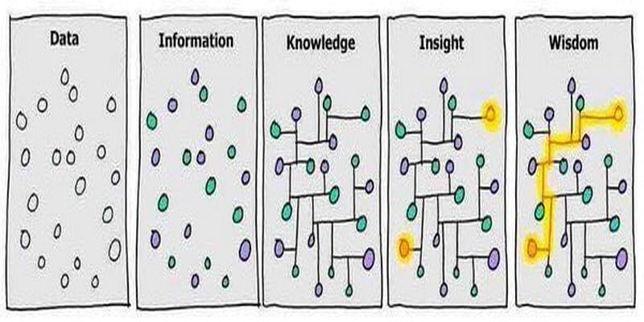
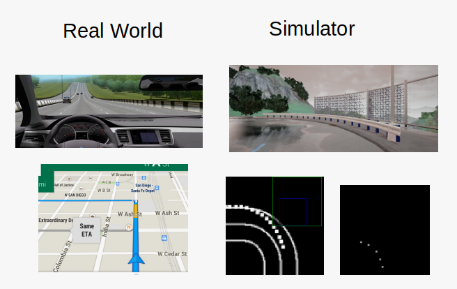
Can we drive with just Camera and Route planner information (Gmap)? Thats what I am currently working on! ___This post will be updated___.
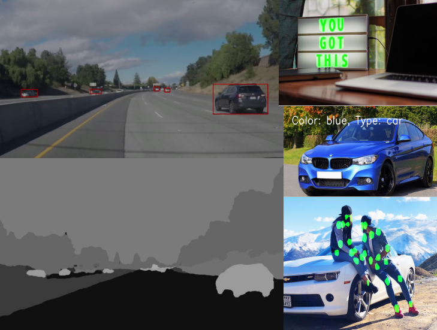
Worked on model optimization techniques, generation of Intermediate Representation (IR), deployment at Edge using OpenVINO Toolkit. This post will be updated.
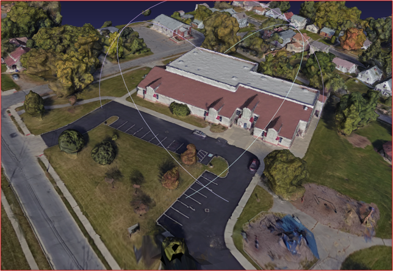
Can we combine Lidar and Google Earth images for reconstruction, such that we get both the benefits from Lidar (accuracy) and Google (photo-realisticness) Images? Yes!
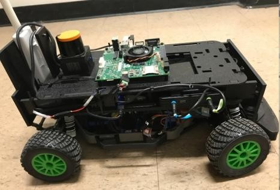
Driving mini F1 car with Lidar. Worked on mapping and localization using SLAM and PF, and on controls for steering and throttle using gain-scheduled PD controller.
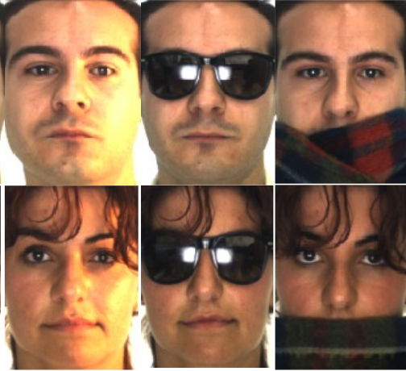
Recognized the identity of 100 person (AR-Face Dataset) using One-Shot Learning (Siamese Network) and model based (PCA) technique.
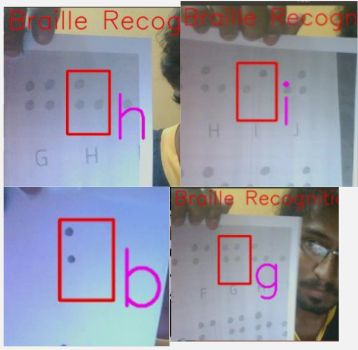
Developed OCR for Braille codes using CNN. Analyzed the performance of custom-build CNNs, and pretrained CNNs such as Inception, VGG and ResNet.
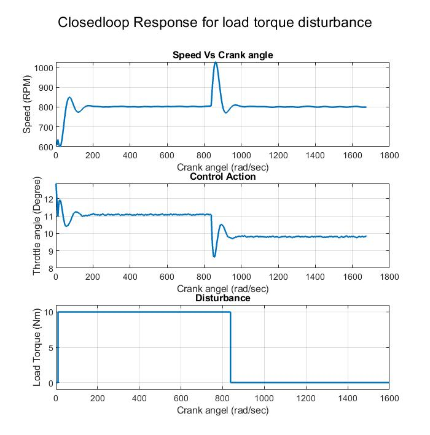
Time-Domain and Crankangle-Domain Analysis of Discrete Linearized and Continuous Non-Linear Model. State Estimation using Kalman and Luenberger Observer. Control using PID, Pole-Placement, LQR and MPC.
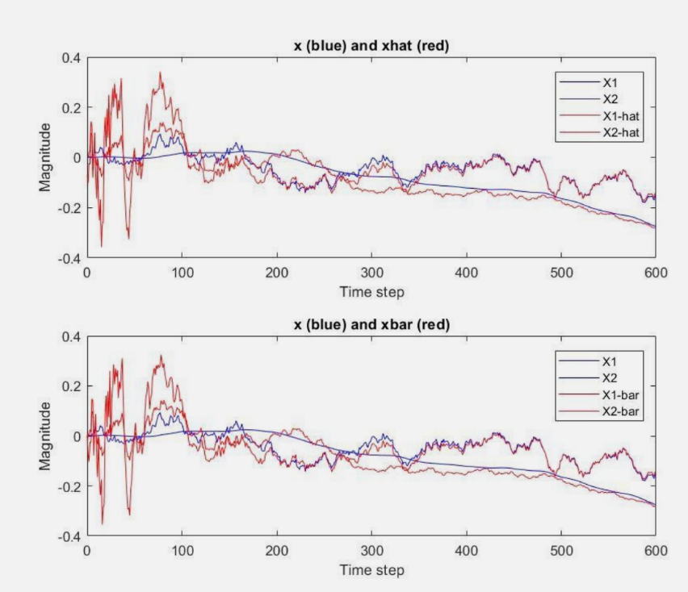
Estimating the states of a Nonlinear System using EKF and controling the spacing between the vechicles in the context of Adaptive Cruise Control.
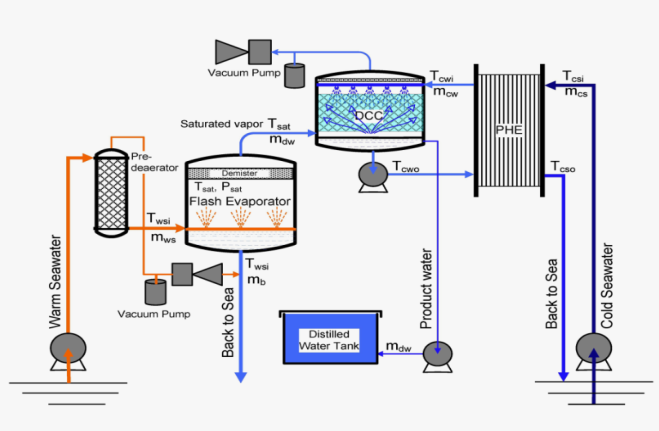
Modelling and Control of Low-Temperature Thermal Desalination plant of NIOT. Worked on mathematical modeling, sensitivity analysis, model approximation, IMC and PID based controls.
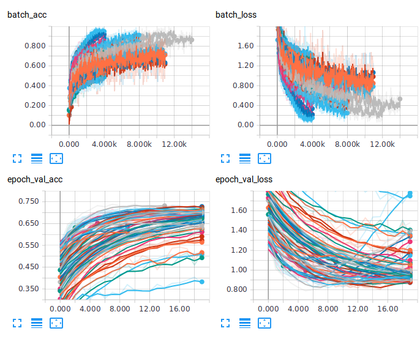
Evaluating CNNs with varying depth, kernel size, dropout, activation, optimization... and comparing their performance with statistical methods such as PCA, ICA, LDA, MM.
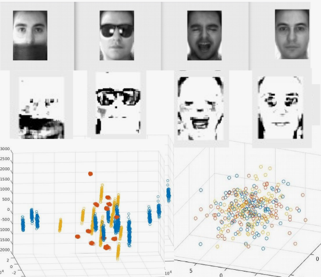
Visualizing the subspaces of PCA, ICA and LDA for the images from AR_face dataset. This site is under dev, I will try to add other projects asap!
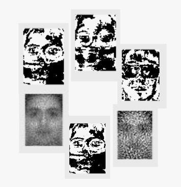
Classifying images using statistical methods namely PCA, ICA, and LDA. Also visualized the subspace and analyzed various methods in each approach.

This site is under dev, I will try to add other projects asap!